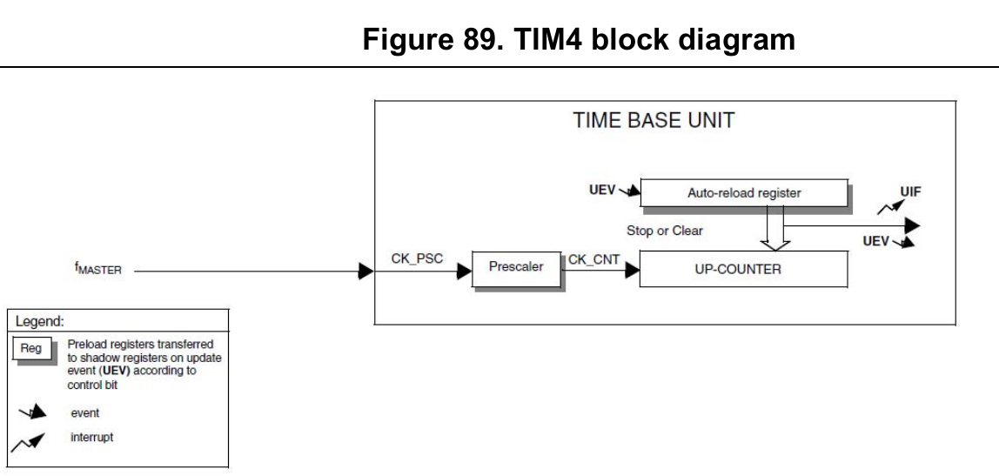

Náš STM8S208RB má na těle celkem čtyři časovače: TIM1, TIM2, TIM3 a TIM4.
TIM4¶
TIM4 je nejjednodušší. Čítač je 8-bitový a předdělička umožňuje dělit kmitočet /1, /2, /4, /8, /16, /32, /64 a /128. Auto-reload register říká kam až se bude čítat – tedy nastavuje strop časovače.

Nastavení se děje pomocí funkce TIM4_TimeBaseInit(PRESCALER, PERIOD), kde
PRESCALER je makro, pro nastavení děličky a PERIOD je 8-bitové číslo.
TIM4_TimeBaseInit(TIM4_PRESCALER_128, 125 - 1);
Takže pokud máme nastaven kmitočet na 16MHz znamená to že čítač čítá do hodnoty
125 (respektive 124 protože čítáme od nuly) s frekvencí 16MHz/128 == 125 kHz.
Znamená to tedy, že každou milisekundu dojde k auto-reloadu a je vyvoláno
přerušení od časovače TIM4.
Aby vše fungovalo musíme:
- povolit TIM4
- povolit přerušení od TIM4
- globálně povolit přerušení
- napsat tělo obslužné rutiny přerušení.
void setup(void) {
TIM4_Cmd(ENABLE); // povolí TIM4
TIM4_ITConfig(TIM4_IT_UPDATE, ENABLE); // povolí přerušení od TIM4
enableInterrupts(); // globálně povolí přerušení
......
}
Rutina přerušení se standardně nachází v souboru stm8_it.c. Stačí ji najít
přepsat. Pokud potřebujete v rutině přerušení pracovat s proměnnou definovanou
v main.c (což je myslím téměř vždy) je třeba tuto proměnnou označit
direktivou extern nebo rutinu přesunout přímo do souboru main.c.
Více o tom se dočtete v postu
Kompilace a knihovny.
/*--- rutina obsluhy přerušení ---*/
INTERRUPT_HANDLER(TIM4_UPD_OVF_IRQHandler, 23)
{
TIM4_ClearFlag(TIM4_FLAG_UPDATE); // vymažu vlajku signalizující přerušení
miliseconds++; // udělám co je třeba....
}
Všimněte si prosím, že první, co se v rutině přerušení dělá, je, že se vymaže vlajka, která označuje, že k přerušení došlo.
Tento kód je například použito v knihovně milis, která umožňuje zjistit počet milisekund uplynulých od “spuštění programu”.
TIM2 a TIM3¶
TIM2 a TIM3 je trochu složitější, ale zde ukážeme jen jeho základní použití. (PWM necháme na samostatný post: Použití časovače jako generátoru PWM)
TIM2/3 je 16 bitový – může tedy čítat do 65535 a předdělička umožňuje dělit /1, /2, /4, /8, /16, /32, /64, /128, /256, /512, /1024, /2048, /4096, /8192, /16384 a /32768.
Takže například pokud vytváříme cokoli, co pracuje s časem a potřebujeme spustit určitý kód vždy přesně v intervalu \(1\,\mathrm{s}\), může inicializace časovače vypadat například takto:
/*---- TIM2 setup ---------*/
TIM2_TimeBaseInit(TIM2_PRESCALER_512, 31250 - 1 ); // 16MHz/512/31250 == 1Hz
TIM2_Cmd(ENABLE); // povolí TIM2
TIM2_ITConfig(TIM2_IT_UPDATE, ENABLE); // povolí přerušení od TIM2
enableInterrupts(); // globálně povolí přerušení
nastavení TIM3 je analogické:
/*---- TIM3 setup ---------*/
TIM3_TimeBaseInit(TIM3_PRESCALER_16, 12345 - 1 ); // ~81Hz
TIM3_ITConfig(TIM3_IT_UPDATE, ENABLE);
TIM3_Cmd(ENABLE);
No a ještě rutiny přerušení… Opět platí, že rutiny přerušení buď necháme v souboru
stm8_it.c a proměnné označíme pomocí direktivy extern nebo si rutiny
přesuneme do modulu/souboru ve kterém je proměnná definována.
INTERRUPT_HANDLER(TIM2_UPD_OVF_BRK_IRQHandler, 13)
{
TIM2_ClearFlag(TIM2_FLAG_UPDATE); // vymažu vlaku signalizující
udelam_neco_zajimaveho();
sec++;
a_jeste_neco_jineho();
}
INTERRUPT_HANDLER(TIM3_UPD_OVF_BRK_IRQHandler, 15)
{
TIM3_ClearFlag(TIM3_FLAG_UPDATE);
LED_REVERSE(G);
}
Zdrojové kódy¶
Kompletní zdrojové kódy naleznete v repositáři na GitHubu:
https://github.com/spseol/STM8-TIM23-zaklad